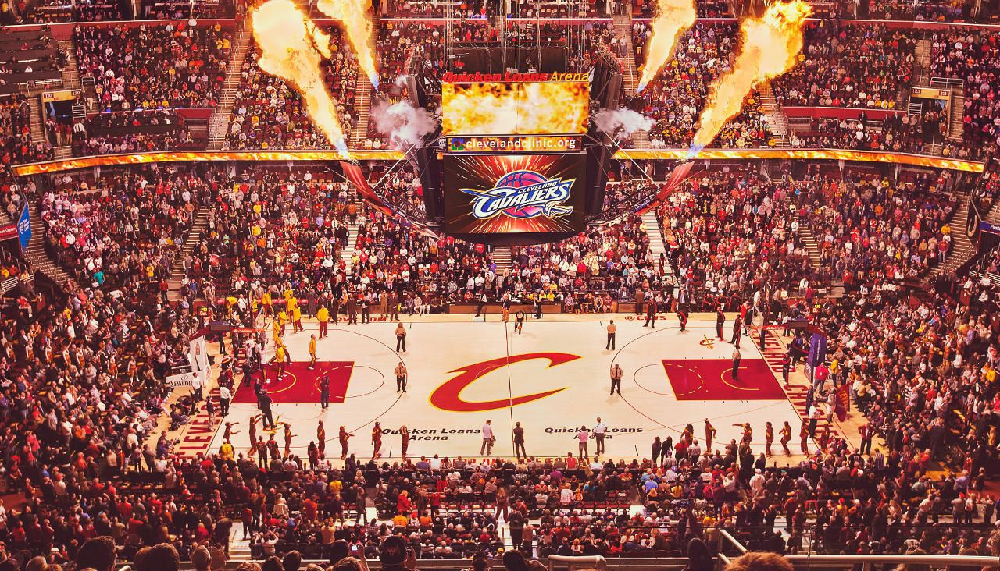

Cleveland Cavaliers - Os Cleveland Cavaliers são uma equipe da NBA fundada em 1970. Embora tenham experimentado sucesso esporádico nas primeiras décadas, foi com a chegada de LeBron James em 2003 que o time alcançou relevância no cenário da NBA. Em 2007, o jovem LeBron liderou os Cavs até sua primeira final, mas a equipe foi derrotada pelo San Antonio Spurs.
Após a saída de LeBron para o Miami Heat em 2010, ele retornou em 2014, formando um trio com Kyrie Irving e Kevin Love que levou o time a quatro finais consecutivas, culminando no primeiro e único título da NBA dos Cavs em 2016. A equipe segue em reconstrução com jovens promessas, como Darius Garland e Evan Mobley, buscando alcançar novos sucessos.
Elenco - Darius Garland (#10), Donovan Mitchell (#45), Evan Mobley (#4), Jarrett Allen (#31), Isaac Okoro (#35), Caris LeVert (#3), Max Strus (#1), Georges Niang (#20).
Títulos NBA - 1 (2016)
Títulos Conferência - 5 (2007, 2015, 2016, 2017, 2018)
Estádio - Rocket Mortgage FieldHouse - (19.432)
